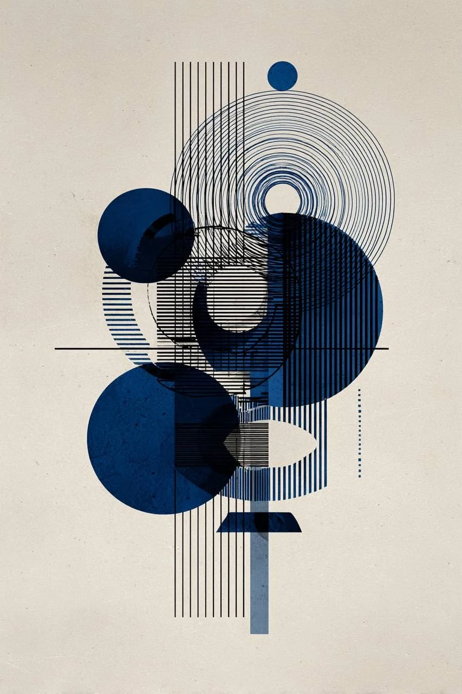
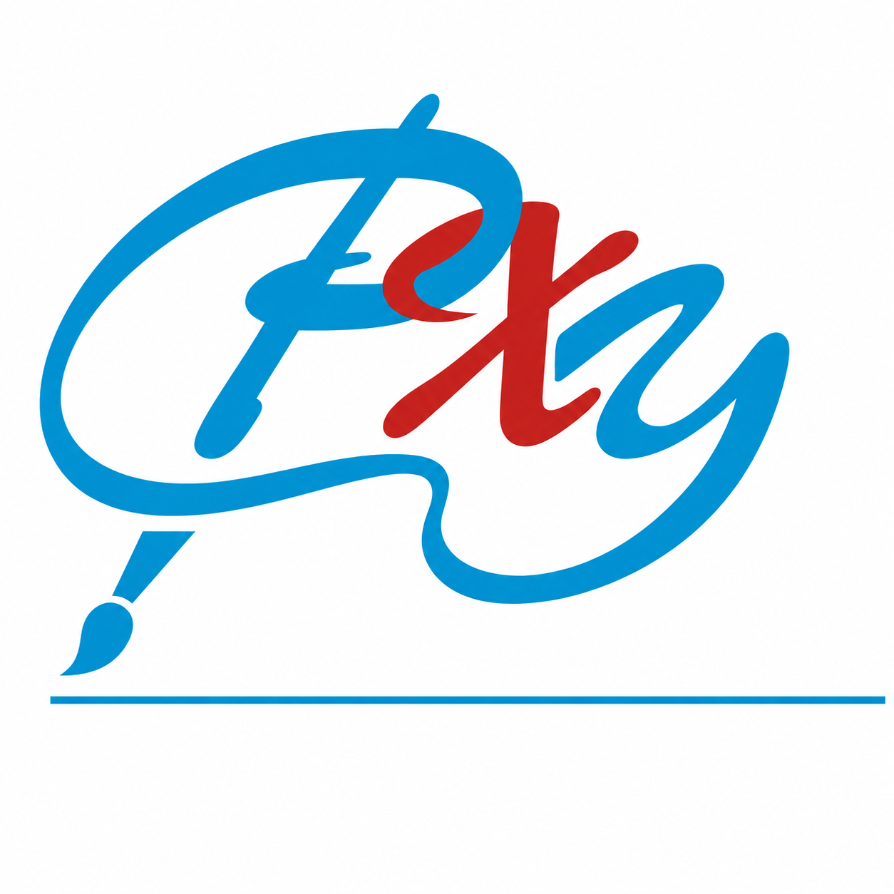
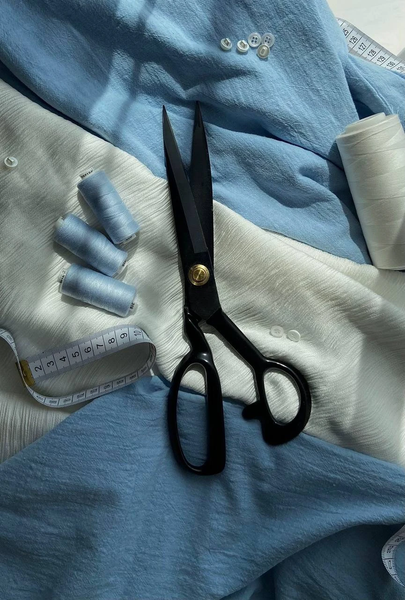
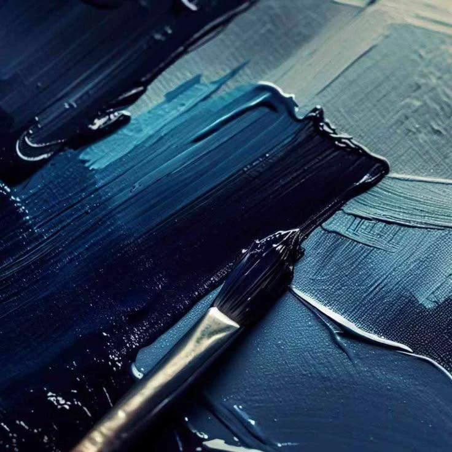
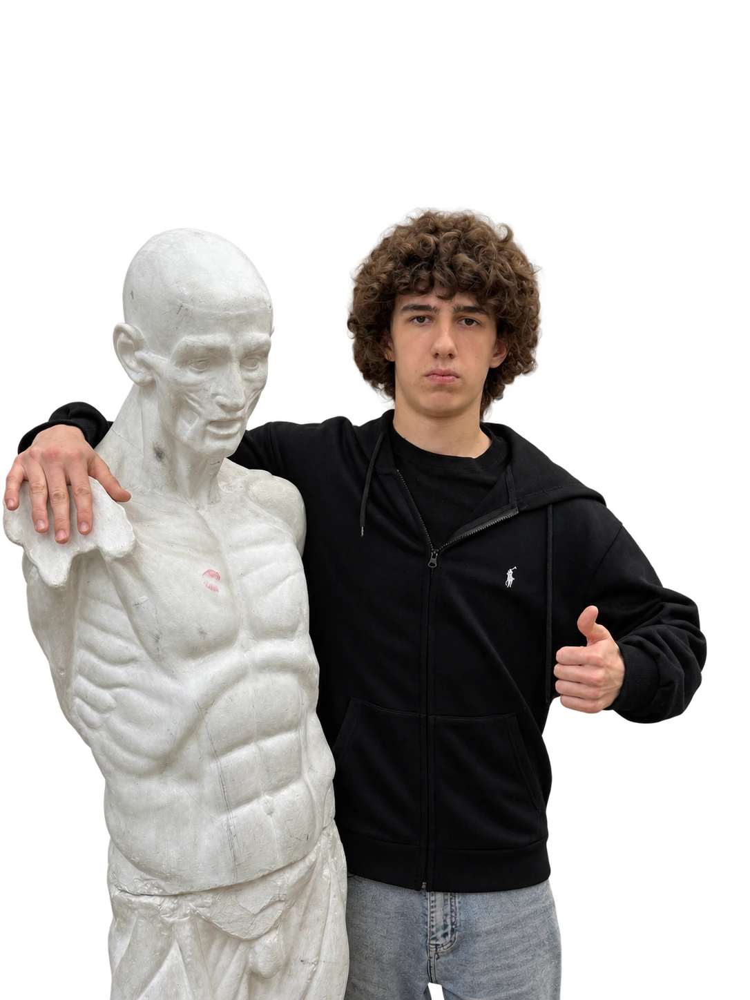

Дизайн
Афиши, фирменный стиль и визуальные решения.

Харлампий ШишкинКандидат в президенты РХУ 12–13 ноябряХарлампий Шишкин.
Студент 3-го курса, живопись.
Президент училища нужен для свежих идей. Я вижу его роль как связующее звено между студентами, руководством и администрацией.
Слышать предложения, обсуждать их вместе и превращать в конкретные дела.
От тех, кто учится здесь
Со студентами и администрацией
С учётом интересов училища
С понятным результатом
Хорошая академическая база — уже наше преимущество.
Предлагаю дополнить её сотрудничеством с предприятиями и организациями: чтобы к диплому добавлялись опыт и реальные кейсы.
Примеры возможных задач
Афиши, фирменный стиль и визуальные решения.

Эскизы и задачи для постановок и творческих проектов.

Художественные проекты и оформление пространств.
От идеи студента — к совместному решению и первому проекту.

Узнать, какие задачи, проекты и изменения важны для разных специальностей.
Представлять предложения и вместе определять, что реально можно сделать.
Вместе искать возможности сотрудничества с предприятиями и организациями.
Заранее обсуждать задачу, сроки, авторство и условия вознаграждения.
Оформлять выполненную работу в кейс: задача, личный вклад и готовый результат.
Чтобы после училища студенты могли заниматься любимым делом, работать по профессии и получать достойное вознаграждение за свой труд.
Это направление, которое я предлагаю развивать вместе с администрацией. Конкретные проекты и партнёры ещё предстоит согласовать.
12–13 ноября2026
9:00–16:00
Библиотека РХУ